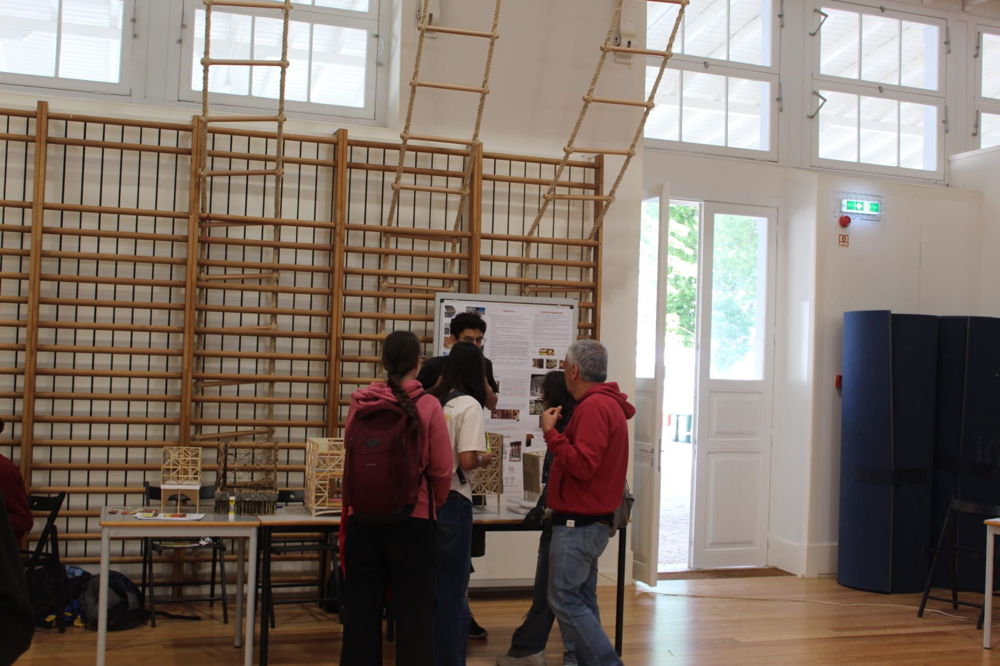

Dia Aberto 2025/26
Data de Realização: Maio de 2026
Objetivos:
O evento contou com a colaboração de várias instituições de ensino superior e centros de investigação de prestígio, apresentando uma grande diversidade de bancas e atividades práticas desenvolvidas com os alunos:
- BioDiversity4All: Mostra dedicada à biodiversidade e à ciência de cidadão.
- Demonstrações de Ciência - "Rocha Amiga": Em colaboração com a Faculdade de Ciências da Universidade de Lisboa (FCUL) e o Instituto Dom Luiz (IDL), focada na geologia.
- Robótica: Desenvolvida em parceria com a IdMind - Living Robotics, onde foram exibidos protótipos de robôs terrestres em funcionamento.
- Deteção de Muões: Um projeto sobre física de partículas e radiação cósmica dinamizado pelo LIP (Laboratório de Instrumentação e Física Experimental de Partículas) e o EDULAB, que incluiu experiências imersivas com óculos de Realidade Virtual (VR).
- Atividade "Formigas pastoras e afídeos": A bancada dedicada às Formigas Pastoras focou-se em explicar de forma prática e observacional as relações bióticas, especificamente o mutualismo, no ecossistema do próprio jardim da escola. A atividade demonstrou em detalhe como funciona esta cooperação entre espécies:
- O projeto explicou que as formigas atuam como autênticas "pastoras" de piolhos das plantas (afídeos). Elas estimulam estes pequenos insetos para que eles libertem uma substância açucarada (uma espécie de melada de que se alimentam), que as formigas recolhem avidamente como fonte de energia.
- Em troca deste alimento, as formigas oferecem proteção ativa aos piolhos das plantas, defendendo-os de predadores naturais (como as joaninhas) e mantendo as suas "colónias de pasto" seguras nos ramos e folhas.
- Atividade "Ciclo das Rochas e Liquefação do Solo": Experiências práticas focadas em dinâmicas geológicas e riscos sísmicos, apresentadas pelo CERENA (Centro de Recursos Naturais e Ambiente) e o Técnico Lisboa.
- Atividade "O que está debaixo dos nossos pés?": Uma bancada interativa apresentada pelo Técnico Lisboa e o CERENA (Centro de Recursos Naturais e Ambiente), onde foi exposto um drone industrial de mapeamento e análise de terreno.
- Atividade "Pequenas moscas, grandes descobertas": Exploração do uso da mosca-da-fruta (Drosophila melanogaster) na investigação biomédica, dinamizada pela Fly Facility da NOVA Medical School.
- Iniciativa focada na ecologia e sustentabilidade ambiental: Com a colaboração da FCUL e do cE3c (Centre for Ecology, Evolution and Environmental Changes).
- Atividade lúdica e pedagógica sobre Seleção Natural: Os participantes usavam pinças e missangas coloridas para compreender de forma interativa as dinâmicas da evolução biológica.
- Abrigos Artificiais para Morcegos: Um projeto de sustentabilidade focado na criação de refúgios para o morcego-anão (Pipistrellus pipistrellus) com o objetivo de criar um ponto de monitorização da biodiversidade na escola. Permitindo aos alunos estudar a ocupação dos abrigos e os hábitos destes mamíferos voadores.
- Exposição de gaiolas pombalinas: Uma mostra de gaiolas pombalinas feitas pelos alunos do clube, inspiradas na arquitetura tradicional portuguesa e na história. Uma mostra ligada à engenharia e arquitetura tradicional de Lisboa pós-terramoto de 1755.
- CERENA: "O que está debaixo dos nossos pés?": Uma bancada interativa apresentada pelo Técnico Lisboa e o CERENA (Centro de Recursos Naturais e Ambiente), onde foi exposto um drone industrial de mapeamento e análise de terreno.
- Fly Facility (NOVA Medical School): Atividade com o mote "Pequenas moscas, grandes descobertas", explorando o uso da mosca-da-fruta (Drosophila melanogaster) na investigação biomédica.
- CE3C: Iniciativa focada na ecologia e sustentabilidade ambiental, com a colaboração da FCUL e do cE3c (Centre for Ecology, Evolution and Environmental Changes).
- Seleção Natural (Um Jogo): Atividade lúdica e pedagógica onde os participantes usavam pinças e missangas coloridas para compreender de forma interativa as dinâmicas da evolução biológica.
- Abrigos Artificiais para Morcegos: Um projeto de sustentabilidade focado na criação de refúgios para o morcego-anão (Pipistrellus pipistrellus) com o objetivo de criar um ponto de monitorização da biodiversidade na escola. Permitindo aos alunos estudar a ocupação dos abrigos e os hábitos destes mamíferos voadores.
- Ciclo das Rochas e Liquefação do Solo: Experiências práticas focadas em dinâmicas geológicas e riscos sísmicos.
👉 Veja como correu o dia no vídeo completo aqui: https://www.youtube.com/watch?v=xofPEHS0Jyc
Parceiros:
Clube Ciência Viva · Instituto Camões · Escola Secundária de Camões
Galeria:


